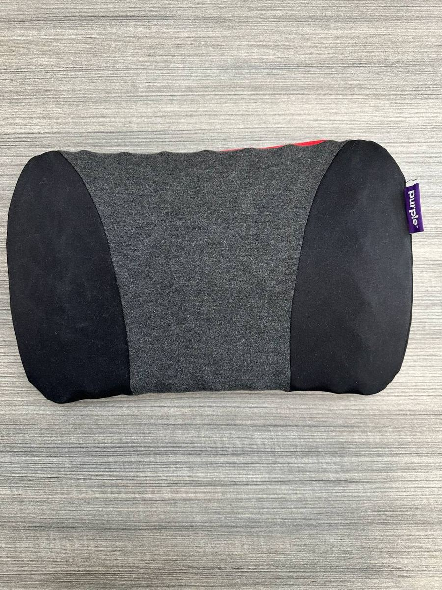
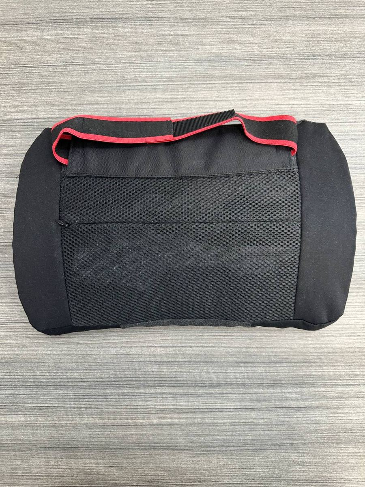

← Back to Cypress Flips


More Finds
Purple Back Cushion - Lumbar Support Grid (Aftermarket Strap)
$50.00
Website direct local pickup price — marketplace listings may be higher.
Purple Back Cushion with the brand's pressure-relieving Comfort Grid (hyper-elastic polymer) inside. Temperature-neutral, designed for car seats, office chairs, and long sitting sessions. Cover is removable and machine washable.
Condition: Sourced from a liquidation store, so this is most likely an open-box return rather than a used cushion. Compared against a mint-in-box example: the fabric is clean with no stains, pilling, tears, or odors visible, the grid inside feels intact with normal bounce-back, and the zippers work. I can't verify prior usage history, so I'm calling it like-new rather than new.
The honest flaw: the original Purple adjustable nylon harness (adjusts roughly 10"-61") is not included. I've fitted a functional aftermarket strap (black/red, shown in the rear photo) that attaches it to a seat back and holds fine, but it may not fit every seat the way the factory harness would. Replacement straps are cheap and easy to swap if you need a different length.
Market context: brand new runs $67 at purple.com ($79 list) with the original harness. Recent used/open-box listings online commonly sit around $45 plus shipping. At $50 local you're getting like-new condition, no shipping wait, and you can inspect the grid and strap fit before paying.
Local pickup available in Cypress, CA.
Have stuff like this to sell? I pay cash for games, figures, and collections.